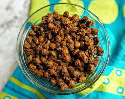

Sukhe Kale Chane

Description
Sukhe kale chane is a very quick recipe to make. Sukhe kale chane are generally served with poori especially on Ashtami and Navami. The prashaad for bhog consist of poori, halwa and sukhe kale chana. Shudh satwik bhojan without onion and garlic. These sookhe kale chane taste great with plain paratha and mango pickle too. They make a great lunch box, travel and breakfast item. These kale chane are nutritious and packed with protein. Just prepare them and add some chopped cucumber, tomatoes, green chillies and fresh green coriander and they become a power packed protein rich salad which you can have as a post workout meal.
Ingredients
- 5-6 medium size Boiled Potatoes
- 1 tblsp grated Ginger (Adrak)
- 1/4 tsp Hing (Asafoetida)
- 1 tsp Jeera (Cumin Seeds)
- 2-3 chopped Chillies
- 1/2 tsp Turmeric Powder
- 1 tsp Red Chilly Powder
- 1 tsp Garam Masala
- 1 tsp Coriander Seeds
- 1/2 tsp Amchur Powder
- 1 tblsp of ghee / oil
Steps
- Boil the potatoes, peel and chop them into cubes. Keep aside.
- In a kadai, heat the oil, add the cumin seeds.
- When they begin to splutter, add the grated ginger and hing.
- Stir fry for 30 – 40 secs or till the ginger becomes crisp.
- Next add green chillies and the dry masalas – turmeric, coriander powder, red chilly powder and garam masala. Add 1 tblsp of water so that the dry masalas do not get burnt.
- Tip in the chopped potatoes and mix well till the masalas coat all the poatoes evenly.
- Sprinkle amchur. Cook on medium for 5-7 minutes till potatoes become little crispy.
- Adjust the salt and sprinkle some chopped green coriander.
- Serve hot with puri, plain paratha.